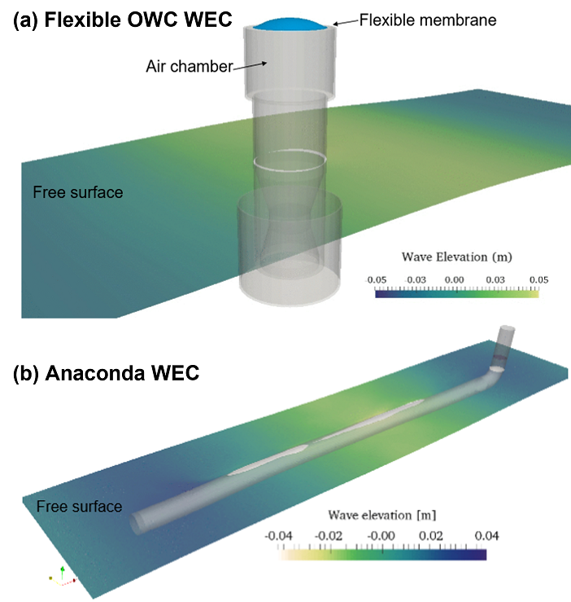
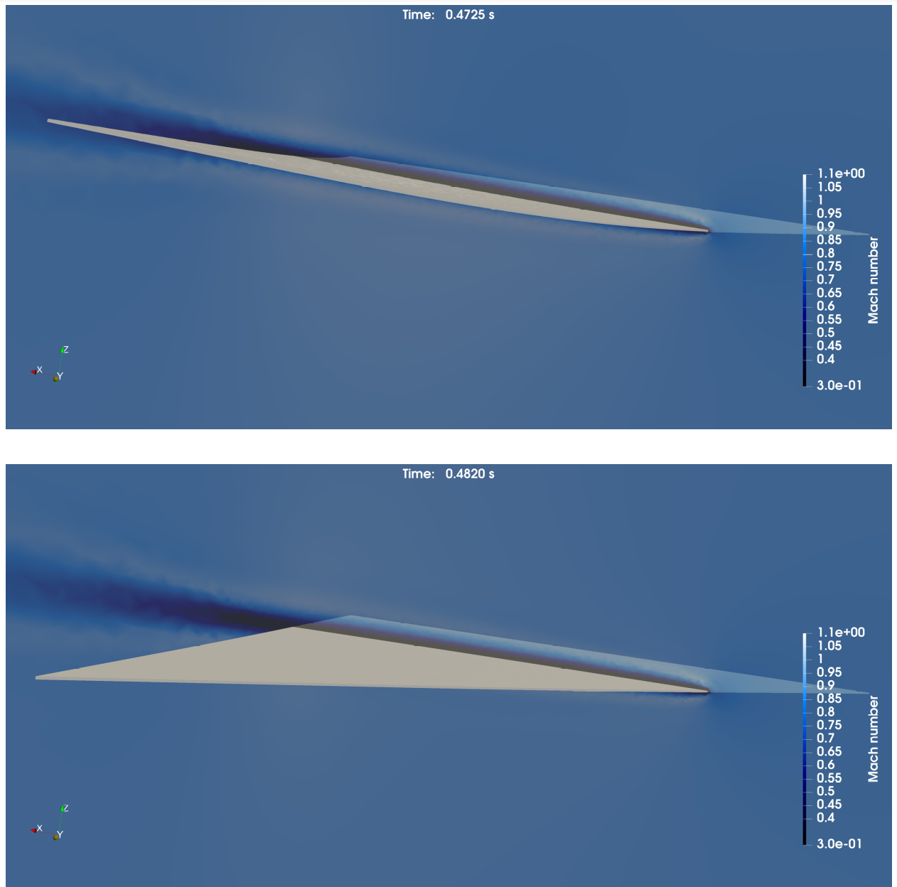

Evaluation of erosion phenomena in a nozzle for Abrasive Water Jet Cutting
In an Abrasive Water Jet Cutting (AWJC) operation, a high-speed water jet is used to accelerate abrasive particles forming a turbulent mixture of water, entrained air, and abrasive powders traveling at hundreds of meters per second. The focusing tube (Nozzle) represents a key component, whose primary scope is to focus and stabilize the flow forming in the mixing chamber, in order to ensure optimal cutting performances of the device. Nevertheless, this nozzle often happens to be the first target of the erosive action of the flow. This phenomenon significantly shortens the operational life of a nozzle. The numerical approach proposed in this work aims to provide an insight to this very fast and disruptive phenomena that is difficult and expensive to be captured by purely experimental studies.
Such state of the art numerical models have only been able to capture erosion through number of impacts, and do not account for the impact forces. In our prototype, we couple three single-physics black-box numerical solvers to create a multiphysics simulation environment. Our prototype uses preCICE to couple the three numerical solvers: XDEM (for the particle motion), OpenFOAM (for the water jet and entrained air), and CalculiX (for the nozzle deformation). This six-way coupling between DEM+CFD+FEM brings the simulation of the particle-laden multiphase flow inside the abrasive cutting nozzle close to real-life conditions – thus, opening up opportunities for further investigation and improvement of the nozzle design. Learn more
—Prasad Adhav LuXDEM, University of Luxembourg

Fluid-structure interaction modelling of flexible material wave energy converters
Inspired by aquatic animals’ flexible body and fins, a range of adaptive, flexible materials have attracted attention in Wave Energy Converter (WEC) development in the past decade. The specific characteristic of such material is that its shape deforms adapting to the loading applied to it. There are several benefits using a flexible material as part of WEC structures. In our project “Bionic Adaptive Stretchable Materials for WEC (BASM-WEC)” (EP/V040553/1), we aim to develop an analysis and laboratory testing integrity toolbox to reliably design, analyse, and process the state of the art adaptive stretchable materials and structures applicable to WECs. To achieve the main objectives, a hydro-elastic analysis tool based on OpenFOAM, CalculiX and preCICE is developed to provide a robust analysis method for prescribing the detailed materials specification required by the desired WEC functionalities. Using this tool, fluid-structure interaction simulations are performed to study the performance of different flexible WECs, including flexible Oscillating Water Column (OWC) WEC and Anaconda WEC. Learn more
—Prof. Qing Xiao CFD & FSI-RG, University of Strathclyde, UK

In-situ data visualization for visual data comparison
One big challenge when working with (simulation) data is the visual comparison of data that stems from different sources. For simulations, this may be data that stems from different software packages and different discretizations. This occurs when one carries out a benchmark study as in Berre et al., for example. The different approaches for solving the same problem usually lead to different types of output file formats and output meshes where information is stored at different locations. Therefore, the members of project area D of the CRC1313 investigate how preCICE’s capabilities can be used to visualize solutions on a predefined reference mesh. In the current prototype, data from a DuMuX simulation is transferred and mapped to the reference mesh via preCICE to be visualized by inpreCICE. This allows for in-situ visualizations and free choice of the visualization mesh independent of the actual mesh used in the simulation. Learn more
—Alexander Jaust SFB1313, University of Stuttgart, Germany
FSI coupling between OpenFOAM and MBDyn of a cycloidal rotor
In this project a FSI coupling was established to investigate the influence of rotor blade deformation of cycloidal rotors and its effect on the rotor efficiency. The preCICE OpenFOAM adapter uses the pointDisplacement function of OpenFOAM to couple motion data. However, simulating rotating bodies of a cyclorotor is not yet possible with this approach in OpenFOAM. Therefore an additional OpenFOAM class was added to couple the rotation motion directly from the MBDyn adapter to OpenFOAM.
The results have also been presented at the HPC-Asia 2022 MMCP workshop (abstract). A dataset of the simulation results including the base case setup can be found here: Schließus, Julian and Gagnon, Louis, Data for: Create a Fluid-Structure Simulation Framework for Cycloidal Rotors, DaRUS, 2022, https://doi.org/10.18419/darus-2232
—Julian Schließus and Louis Gagnon Institute of Aerodynamics and Gas Dynamics, University of Stuttgart, Germany
Fluid-structure interaction in transonic and supersonic flows
In our research group, coupled simulations of thin flat wings and flexible structures in high-speed flows such as transonic and supersonic flows is conducted. Our fluid-structure interaction (FSI) analysis model is constructed based on the coupling between the compressible fluid solver SU2 and the structure solver CalculiX using preCICE. The unsteady behavior of the self-induced oscillation of a flat delta wing in a transonic flow is investigated with the FSI model. The oscillation of a flat delta wing starts with an initial disturbance and eventually leads to a large limit-cycle oscillation. The mechanism of coupling between elastic deformation and transonic flow near the wing which causes the limit-cycle oscillation is clarified by the FSI model. Learn more
—Yusuke Takahashi Space Transportation System Laboratory, Space Transportation System Laboratory, Hokkaido University, Japan

Coupling mechanics and electrophysiology in skeletal muscles
In our project “Towards a digital human”, we improve the understanding of the neuromuscular system by simulating multi-scale models of skeletal muscles with realistic resolutions on HPC clusters. In particular, we implemented a complete biophysical multi-scale model of the neuromuscular system in our open-source software OpenDiHu. We simulate biochemical processes of subcellular force generation (0D), muscle fiber activation (1D) as well as electric conduction in the extracellular space (3D). In order to additionally take muscle contraction into account, we apply volume coupling between the finely resolved 3D electromyography model, which computes muscle activation, and a coarse 3D solid mechanics solver, which computes the muscle deformation. Using preCICE, we are able to simulate the respective highly resolved scenarios with 100 million degrees of freedom on more than 9,000 cores on the supercomputer Hawk at the High Performance Computing Center Stuttgart. Furthermore, preCICE helps us to numerically couple multiple mechanical models with different materials, e.g., the biceps brachii muscle and its tendons. Using preCICE, our code is envisioned to become a building block in combination with other external solvers within a comprehensive “digital human model”. Learn more
—Benjamin Maier and David Schneider Simulation of Large Systems, University of Stuttgart, Germany
Simulation of flow-acoustic-structural interactions in duct systems
To study the influence of flow-induced vibrations on noise mitigation solutions in duct systems like ventilation systems, the interactions between the flow-acoustic field inside the duct and the structural vibrations of the flexible components need to be understood. Therefore, I coupled an in-house MPI-parallelized aeroacoustics solver for the linearized Euler equations to an in-house structural solver for linear elasto-dynamics. The coupling is managed by the preCICE library, which offers an excellent framework for coupling time domain solvers. Learn more
—Jurgen Kersschot LMSD Division, Mechanical Engineering Department, KU Leuven, Belgium
FSI coupling with multibody dynamics
When fluid-structure interaction involves slender or flat structures, it is interesting to apply reduced dimensionalty models (e.g. shells, or beams) to perform such computations. We coupled MBDyn (an open source multibody dynamics software developed at Politecnico of Milan) to preCICE within a master thesis project, exploiting the C++ interface provided by MBDyn. We validated the set-up in the incompressible regime coupling MBDyn and OpenFOAM and comparing our results with the well-known Turek & Hron benchmarks, which proved to be challenging because of added mass instability issues. Some preliminary results can be found in the thesis, while an extensive validation has been described in a conference paper. Learn more
—Claudio Caccia Department of Aerospace Science and Technology (DAER), Politecnico of Milan, Italy
Optimization of thermal groundwater heat pump usage in Munich
The GEO.KW project aims to improve the efficiency of thermal groundwater use in urban environments. Careful placement and usage of groundwater heat pumps is critical for optimal use of the shallow subsurface. An optimization tool is being developed that couples a subsurface flow solver (PFLOTRAN ) with an energy system optimization solver, (urbs ). This presents a unique coupling problem, where completely different physics are involved in each solver. We use preCICE as it already has the required coupling schemes, acceleration schemes, and parallel communication and data mapping. We saved time by using the functionality already available in preCICE for software coupling, allowing us to focus on our models and not reinventing the “coupling” wheel. Learn more
—Fabian Boettcher Chair of Hydrogeology, Technical University of Munich, Germany
Hybrid-dimensional coupling for flow in deformable fractures
Simulating flow in deformable fractures embedded in a porous medium is a challenging numerical task, especially when the aspect ratio of the fracture is large (length » aperture). We respect this in our model by using a hybrid-dimensional formulation to reduce the flow problem’s dimension. Discretization of the model is done in FEniCS as it is easy to use through its Python interface. preCICE allows us to couple our codes nicely due to the available Python bindings. Additionally, the architecture of preCICE allows us to immediately use FEniCS’ parallel computing capabilities which are mandatory for large scale simulation. Learn more
—Patrick Schmidt Institute of Applied Mechanics (CE), University of Stuttgart, Germany

Coupling free and porous-medium flow
In the CRC1313, we work on interface-driven multi-field processes in porous media. One of the cases that we are interested in is coupled free and porous-medium flow for which new coupling concepts and coupling conditions are evaluated and derived. We implement everything in the open-source simulator DuMuX for which we also work on an adapter to make usage of preCICE even more convenient. The partitioned coupling approach and the C++ interface of preCICE allows us to conveniently couple the subproblems, even with non-trivial interfaces in 2D and 3D, while avoiding problems of commonly used monolithic approaches. This increases the flexibility to implement and evaluate different coupling conditions tremendously. Learn more
—Alexander Jaust Simulation of Large Systems, University of Stuttgart, Germany

Coupling of Shallow Water Equations and OpenFOAM
As a Master’s thesis project at TUM, we used preCICE for coupling the 3D Navier-Stokes model and the 2D Shallow Water Equations model, using the OpenFOAM framework for the Navier-Stokes model and a stand-alone Shallow Water Equations solver written in C++. Such a coupling is interesting e.g. in flood simulations or simulation of sea waves near structures. The black-box coupling approach of preCICE made such a geometric multiscale coupling easier without any changes on the OpenFOAM side. Learn more
—Francisco Espinosa Chair of Scientific Computing, Technical University of Munich, Germany

A GUI for OpenFOAM/CalculiX FSI coupling with preCICE
DHCAE Tools provides services to support companies and universities for the implementation of open-source solver technology. Beside this, DHCAE Tools offers calculation services for flow applications, whereby fluid-structure applications are a long-standing field of activity with commercial solvers as well as with self-developed couplings. Due to preCICE’s outstanding capabilities, the setup of a coupling between OpenFOAM and CalculiX is now supported by DHCAE Tools in the graphical interface CastNet. This simplifies the mesh generation, the case setup for both OpenFOAM and CalculiX, the definition of the coupling parameters and finally the monitoring of the simulation. Learn more
—Ulrich Heck DHCAE Tools GmbH, Krefeld, Germany

Simulation of temperatures on the moon with THerMoS
We are developing THerMoS, a tool for simulation of temperatures on the surface of the Moon including rovers and astronauts operating on the lunar surface. Ray tracing on a single or multiple GPUs with NVIDIA Optix calculates the heat transfer by radiation between surface elements, while a MATLAB routine solves the equation of heat diffusion. preCICE couples the two domains and handles the communication between MATLAB and NVIDIA Optix. Other solvers and simulation approaches (instead of MATLAB and NVIDIA Optix) are going to be tested in the future with the aid of the flexibility that preCICE offers. Learn more
—Matthias Killian Chair of Astronautics, Technical University of Munich (TUM), Germany

Fluid-structure interaction during sandwich manufacturing
Structural sandwich components made of continuous fiber reinforced plastics (CFRP) are increasingly demanded by the automotive industry. In the Resin Transfer Molding (RTM) manufacturing process, a polymer foam core is embedded between dry fibers. During manufacturing, a liquid polymer resin infiltrates the fibers with high injection pressure, which leads to a deformation of the foam core. We simulate the mold filling with OpenFOAM and the foam core deformation with CalculiX. By coupling OpenFOAM and CalculiX via preCICE, we can now predict foam core deformation and mold filling behavior correctly. This allows us to optimize the manufacturing of high performance lightweight CFRP sandwich components. Learn more
—Julian Seuffert Lightweight Technology, Institute of Vehicle System Technology (FAST), Karlsruhe Institute of Technology (KIT), Germany

Fluid-structure interaction on flapping wings
The flow around flapping wings allows them to create high lift using various of unsteady flow phenomena. Adding flexibility to the wing can help to reduce drag and increase performance. At TU Delft, we are investigating flapping wings and the implication of flexibility in these wings. The high, nonlinear deformations of these wings require a strongly coupled simulation to find a solution. For this means a framework is set up using CalculiX and OpenFOAM, coupled with preCICE. For this work, the OpenFOAM adapter was extended to support force and displacement coupling in FSI simulations. The large number of coupling functionalities in preCICE gives the user the opportunity to build advanced and scalable simulations with ease. Learn more
—Derek Risseeuw Aerodynamics, Faculty of Aerospace Engineering, TU Delft, The Netherlands

Coupled simulation of the continuous casting process
The continuous casting process combines various physical aspects. As the liquid metal is continuously fed into a mould, a mixture between liquid, mushy and solid phases emerges. FVM based CFD solvers (e.g. OpenFOAM, Ansys CFX) are capable of predicting the temperature household considering convective heat transfer. However, FEM based CSM solvers (e.g. LS-DYNA) are better suited for calculating the resulting stress and strain fields, in order to identify critical zones and predict failure. preCICE enables us, the Light Metals Technologies Ranshofen, to couple the CFD solver with the CSM solver so to combine their single advantages. Furthermore, the possibility exists to couple an additional solver for the virtual simulation of the microstructural behaviour during solidification. Learn more
—Matthias Hartmann LKR Leichtmetallkompetenzzentrum Ranshofen GmbH, AIT Austrian Institute of Technology

Fluid-structure interaction of inflatable wing sections
Airborne wind energy is a novel renewable energy technology using tethered wings to harness wind energy at higher altitudes and with less material. At TU Delft, we are investigating the aerodynamics of inflatable membrane wings which are highly flexible and therefore exhibit a strong coupling between fluid and structure. In our fluid-structure interaction (FSI) simulation framework, we use OpenFOAM to calculate the aerodynamic load distribution on the wing and mem4py or, alternatively, MBDyn to calculate the structural deformation. We use preCICE to couple the solvers and implemented the preCICE adapters in Python for mem4py and MBDyn. Thanks to preCICE, we achieved accurate, stable and efficient fluid-structure coupling with a small piece of code (less than 100 lines).
—Mikko Folkersma Wind Energy, Faculty of Aerospace Engineering, TU Delft, The Netherlands

Hybrid simulation methods for wind modelling in urban areas
We are developing a two-way-coupled solver for urban wind modelling where the simulation region is split into a region of interest, modelled by an in-house lattice Boltzmann solver run on GPU, and the remainder of the domain, modelled by the finite volume solver OpenFOAM. The hybrid model combines the characteristics of both solvers to produce an efficient tool for simulation of large-scale geometries with specific local regions of high interest. preCICE is an essential tool to enable the coupling of the two solvers due to its ease of use, robustness and open source community. preCICE provides clear documentation with step by step tutorials, different coupling and interpolation schemes and it requires only minimal modifications within the coupled codes. Learn more
—Marta Camps Santasmasas Aerodynamics research group, MACE, The University of Manchester, UK

FSI Simulations of High Impact Loads on Structures
Understanding high energetic explosive impact loads on structures is fundamental in risk assessment and development of mitigation plans. Using preCICE as a coupling platform, we successfully coupled our in-house unstructured compressible flow solver (muSICS) with an opensource structural FEM solver (CalculiX). Acting as a plug-in to existing solvers, preCICE provided a very efficient coupling mechanism for fluid-structure interaction applications. Collaborating with the developer from preCICE team has been instrumental for us to further develop our inhouse capability for this type of simulation platform. We would continue and look forward to our collaboration with the preCICE team for future applications. Learn more
—Vinh-Tan Nguyen, PhD Senior Scientist and Capability Group Manager, Institute of High Performance Computing, A*STAR, Singapore

Evaluation of heart valve biomechanics
We are performing research into the design of artificial heart valves, by using experimental and numerical techniques. We are currently using preCICE to couple OpenFOAM (FOAM-Extend, self-written adapter with immersed boundary approach) and CalculiX (official adapter) to perform numerical simulations of the opening and closing of heart valves. We are using preCICE as it can handle numerical simulations of large sizes with ease as opposed to previous in-house couplers. Furthermore, the quick and efficient coupling techniques reduce our simulation time significantly.
—Kyle Davis University of the Free State, Department of Cardiothoracic Surgery, South Africa

Exascale Simulation of Fluid-Structure-Acoustics Interaction
At TU Darmstadt we are interested in engineering applications that involve coupled fluid-structure problems, as well as aeroacoustics. Our research focuses on the development of our CFD/CAA solver FASTEST, which we couple via preCICE to the structural solver FEAP, and to the generic solver Ateles for an acoustic far-field. preCICE is particularly well-equipped for cutting-edge research: it is highly customizable to specific setups, it has a comprehensive debugging output that lets you find errors fast, and it offers high scalability that ensures applicability to large problems in future years. Especially important for us is the availability of advanced coupling schemes and post-processing methods. Over the several years of cooperation with the preCICE developers we have learned to appreciate their quick and competent response to support and feature requests.
—Dr. Thorsten Reimann Scientific Computing, Technical University Darmstadt, Germany

Fluid-structure interaction modelling of biomimetics
CFD & FSI-RG at University of Strathclyde UK is a Computational Fluid Dynamics & Computational Structural Dynamics research group. Particular interests focus on the investigation for marine renewable energy devices, biomimetics and offshore fluid-structure-interaction research using numerical modelling methods. One of the numerical approaches we are currently using is to integrate our in-house CFD solver with the open-source structural analysis code CalculiX via preCICE, a coupling library for partitioned multi-physics simulations. We selected preCICE not only because of the high-level API features and the advanced coupling techniques, but more importantly, because the preCICE team is always helpful in providing relevant support. We are looking forward to further close collaboration with the preCICE developers in our research for marine bio-inspired and offshore ocean engineering applications. Read more
—Dr. Qing Xiao CFD & FSI-RG, University of Strathclyde, UK

Development of adapter-codes for multiphysical simulations
At the University of Siegen (LSM group), we are currently developing different adapter codes to run partitioned simulations using preCICE as the coupling interface. In a first step, we coupled two solvers within the frameworks of deal. II and OpenFOAM (foam-extend) to simulate conjugate heat transfer problems. In a second project, a structural solver based on deal. II was coupled with an OpenFOAM solver, capable of handling dynamic mesh movement for FSI simulations. preCICE offers sophisticated post-processing methods, which considerably improved the convergence and stability of our implicitly coupled system. Additionally, the capability of peer-to-peer communication in case of parallel simulations was a reason to choose preCICE. From our point of view, preCICE proved to be a very promising and efficient coupling strategy supported by a committed community of users and a dedicated developer team. For the future, we would like to further improve our self-written adapters as well as test and integrate available adapters.
—Dr.-Ing. Fettah Aldudak Chair of Fluid Mechanics, University of Siegen, Germany

FLEXCFD – Aeronautic fluid-structure interaction problems
The project FLEXCFD aims to upgrade our in-house developed aerodynamic solver in order to simulate unsteady configurations with flexible surfaces in relative motion. Our main objective is to simulate dynamic fluid-structure interaction, with fluid and structural solvers synchronized by a partitioned approach. We foresee aeronautic applications, such as flexible aircraft and rotorcraft. We choose preCICE for several reasons: the open source environment, availability of non-linear structural dynamics, the possibility to test both explicit and implicit coupling, and the numerous already implemented interpolation and exchange methods for forces and deformations. Learn more
—Davide Cinquegrana, PhD CFD Laboratory, CIRA - Italian Aerospace Research Centre, Italy